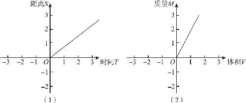
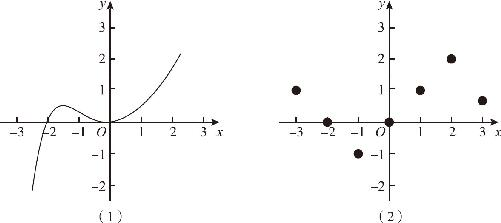
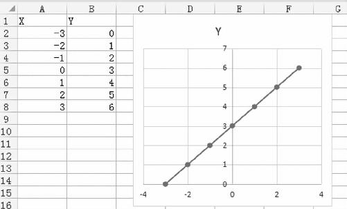

实际生活中，无论是自然界中的山山水水，还是人类建造的城市乡村，几乎每一个位置都有它对应的名称．通过数字的方式来表示一个位置，不但不直观，而且是乏味无聊的．然而我们要知道的是：通过数字来表示位置的这种方法并不是笛卡尔首创的，在很早以前，人类就开始在天文和航海的领域中使用它．这个场景我们也不难理解：在浩瀚的星空里，在茫茫的大海上，周围没有任何参照物，在这种前不着村后不着店的情况下，因为不得已才使用坐标表示法．笛卡尔把这种方法带入了我们的生活．
为什么笛卡尔在看到蜘蛛晃来晃去的时候，会恍然大悟呢？因为他当时忽然明白的，并不是通过坐标系来表示蜘蛛的位置．他发现这个蜘蛛晃动的规律，和伽利略看到单摆晃动规律是一样的．笛卡尔出生的年代正好在伽利略之后，他非常熟悉伽利略的单摆实验，因为单摆的运动是可以通过一个代数式来表示的，所以他自然就想到了，和这个代数式对应的，应该就是平面直角坐标系上的一条曲线．在解析几何中，解析对应的是代数表达式，几何对应的是几何图形．当笛卡尔想通了这一点的时候，解析几何的大门就彻底打开了．
对于坐标系内的任何一点，都需要两个数字来描述，一般来说，这两个数字之间是相互独立的．对于平面内的任意一点而言，它的横坐标和纵坐标之间没有必然的联系；如果这一点按照某个规律运动，结果就大不一样了．如果我们用横坐标表示时间，用纵坐标表示运动的距离，那么当物体在做匀速运动时，经过相同的时间就会移动相同的距离，因此，当物体运动的时间和距离呈现在坐标系上以后，一条直线就会清晰地显示出来，这不仅是代数和几何的融合，更是时间和空间的融合：有了解析几何的帮助，我们又掌握了一种认识世界的全新的方式：转瞬即逝的时间被凝固在了坐标系上，变化的规律凝聚为不变的图形，运动的轨迹变成了静止的曲线，世界呈现出了它的本来面目．
当然，解析几何所表达的图形不仅局限于匀速运动，只要在世界上存在两个相互依存的变量，只要它们之间存在某种一一对应的计算关系，它们之间的规律就可以通过坐标系上的图形来表示．整个世界无时无刻不在运动变化之中，因此也就产生了很多变化的数量，在这些变量之中，有的变量是主动变化的，而有的变量却是因为其他变量的改变而改变的．比如：一个人的年龄会因为时间而变化，物体的质量会因为体积而变化．我们把主动变化的量叫作自变量，把被动变化的变量叫作因变量，如果因变量能够被自变量的大小唯一确定，我们就说因变量和自变量之间存在函数关系，或者说因变量是自变量的函数，比如：在速度确定的条件下，路程就是时间的函数；在密度确定的条件下，物体的质量就是体积的函数．（如图12－1所示）

图12－1
在代数学里，我们常常可以把函数写成代数表达式的形式，如果用x 表示自变量，用y 表示因变量，那么函数的表达式就是y ＝f （x ）．f 指的就是某种确定的运算关系，比如，y ＝x ＋1，y ＝3x －2，y ＝2x 2 等，都表示y 和x 之间存在一种函数运算关系．但是，y 是x 的平方根却不是一种函数关系，为什么，因为x 的平方根有两个，结果并不是唯一确定的，所以y 是x 的平方根就不属于函数关系；但是如果我们说y 是x 的算术平方根，舍弃了负的平方根只留下正的平方根，结果就可以唯一确定了，于是我们就可以说y 是x 的函数．
当y 和x 的这种函数关系表现在平面直角坐标系上以后，就会以图形的方式展现出来．根据具体的函数形式不同，函数图象可能是一条直线，也可能是曲线，还可能是折线或者彼此不连续的一些松散的点，但无论如何，只要y 的值能够随x 唯一地确定，我们就可以认为y 是x 的函数．（如图12－2所示）解析几何要研究的内容有两部分：一是从函数的表达式得到函数图象；二是根据函数图象得到一个确定的结果，或者根据一些松散的数据反算出函数的表达式．

图12－2
电子表格可以帮助我们快速地把坐标数据转化为函数图象，如果你懂得电子表格的操作方法，在学习函数的时候，不妨多在电子表格中练习一下．可以用两列数字分别表示x 坐标和y 坐标的数值，然后生成这些坐标数据的函数图形，无论是微软的Excel还是国内的WPS表格都可以．具体操作方法如下：
打开电子表格后，默认会有一个空白的表格，在第一列开头写个x ，第二列开头写个y ．然后按照由小到大的顺序，先在第一列的单元格中输入一些数字，如－3、－2、－1、0、1、2、3，然后在和它对应的第二列中，直接输入公式．先输入一个等号，再把需要的公式输入进去，如果我们希望y ＝x ＋3，就可以先点一下左边的格子，然后再输入一个＋3，点击回车键，结果就会显示出来．为了快速计算出其他几组数据，还可以把带有公式的单元格快速复制粘贴到第二列的其他单元格中，于是，我们就生成了几组坐标数据．有了这些数据以后，我们再通过鼠标选中数据区域，然后点击生成图表按钮，选择那个自带平滑线的XY散点图，一幅函数图象就生成了（如图12－3所示）．通过这种方式，作图的效率大大提升．

图12－3
关于函数，虽然已经做出很多解释，但仍然会存在很多疑问：
函数是一种数字类型吗？不是！
函数是一个变量吗？不是！
函数是一个方程式吗？也不是！
函数是一个图象吧？仍然不是！